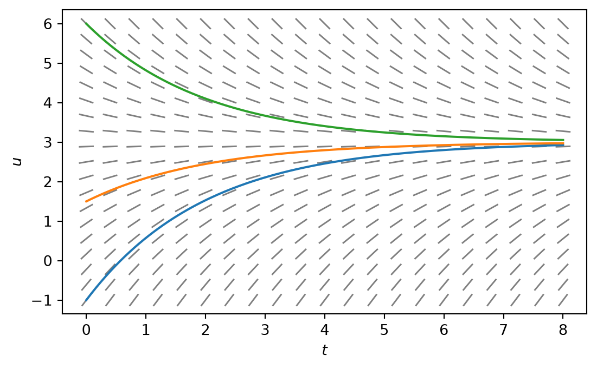
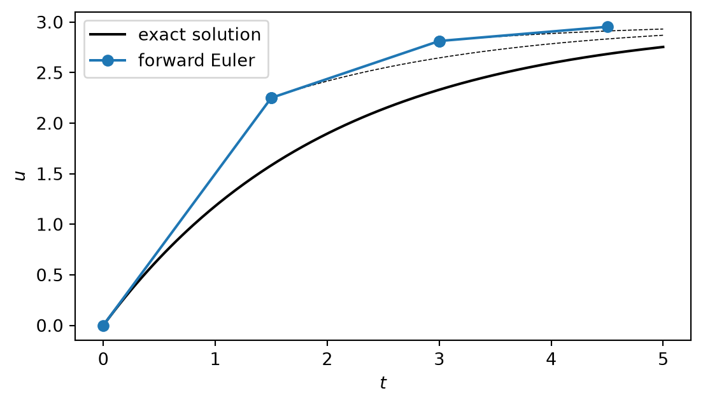
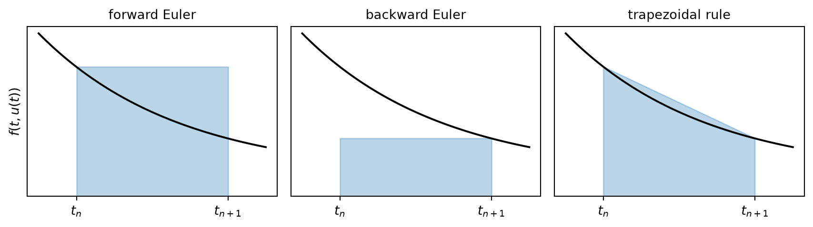
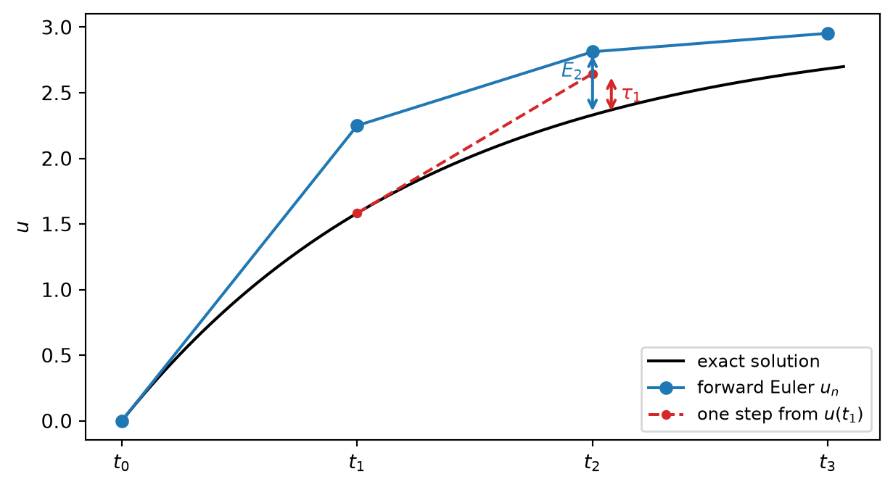
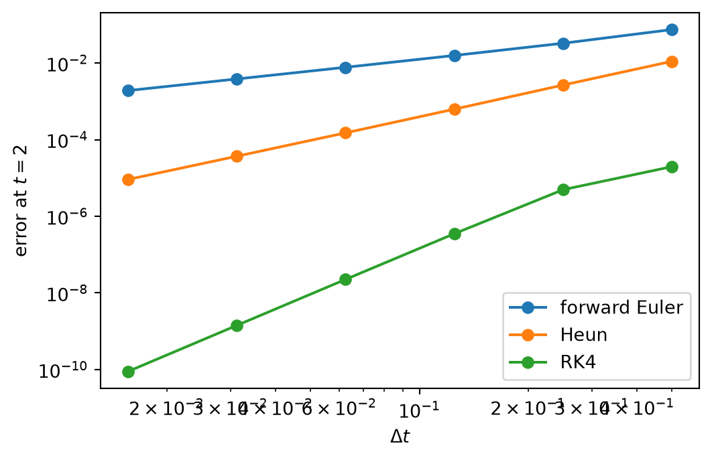
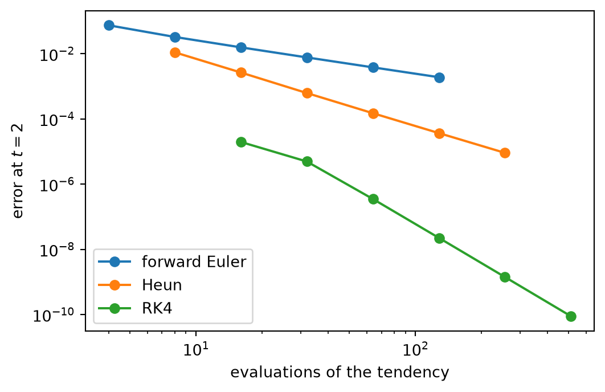
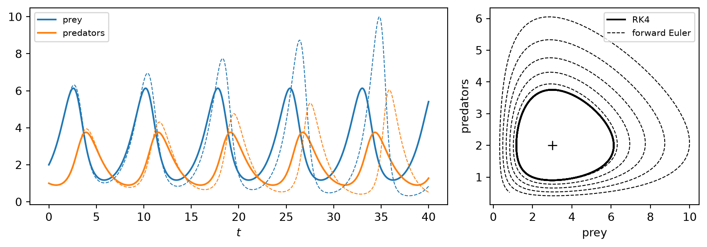
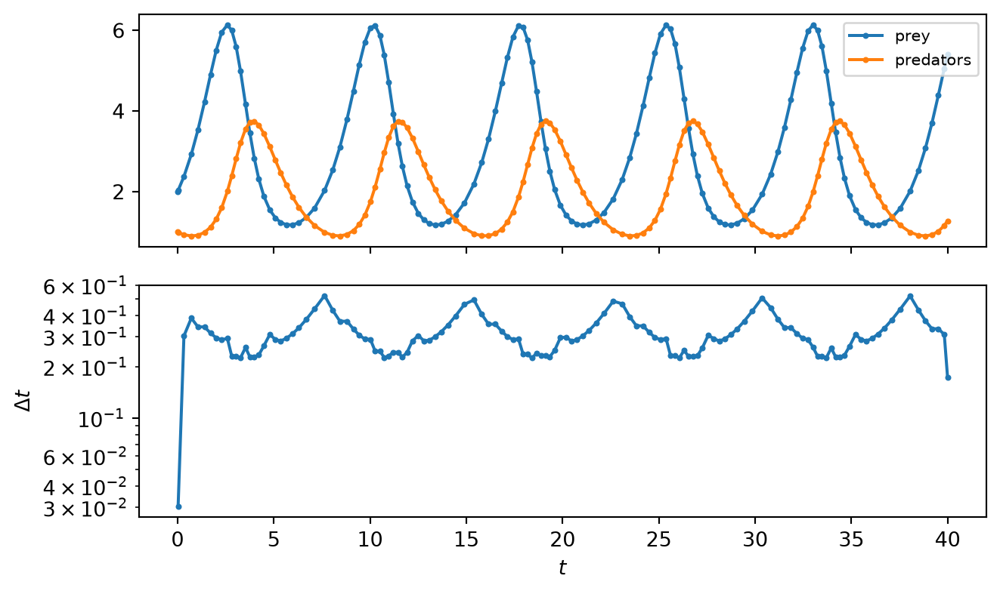

write a PDE that is discretized in space as a system of ODEs, and relate its time scales to the eigenvalues of the model matrix,
read the qualitative behaviour of an ODE from its direction field,
derive the forward and backward Euler methods in three ways and implement them,
derive the local truncation error of a method and explain how it determines the global error,
derive the order conditions of two-stage Runge–Kutta methods and use the classical method of fourth order,
compare methods by the accuracy they reach for a given amount of work,
explain how adaptive methods choose the time step.
Every prognostic model steps forward in time. After the spatial derivatives of a PDE have been discretized, what remains is a large system of ordinary differential equations in time. The methods of this unit are the time stepping schemes of weather, ocean and groundwater models, studied here on problems small enough to be understood completely.
The unit proceeds in six steps, each building on the previous one:
The initial value problem (Section 5.1): what we solve, where the systems of ODEs come from, and when the problem is well-posed.
The forward Euler method (Section 5.2): the simplest method, derived in three ways. Each way leads to better methods later.
The backward Euler method (Section 5.3): the simplest implicit method, and what it costs.
Errors (Section 5.4): how the error of a single step determines the error at the end, and what the order of a method is.
Methods of higher order (Section 5.5): Runge–Kutta methods, their order conditions, and a fair comparison of cost and accuracy.
Systems and adaptive time steps (Section 5.6, Section 5.7): the same methods for vectors, and automatic choice of the time step.
5.1 The initial value problem
The goal of this section: state the problem that all methods of this unit solve, show where it comes from in a PDE model, and collect what we know about its solutions before we compute anything.
The function \(f\) is the tendency: it gives the rate of change of the state \(u\) for any time \(t\) and any state; \(t_0\) is the start time and \(u_0\) the initial value. The methods of this unit compute the solution at times that are a time step\(\Delta t > 0\) apart. In much of the literature on ODEs the unknown is called \(y\) and the step \(h\); we keep \(u\) and \(\Delta t\), because \(h\) is the grid spacing in space.
5.1.1 From a PDE to a system of ODEs
The diffusion equation Equation 2.9, \(\partial u / \partial t = D \, \partial^2 u / \partial x^2\), shows where systems of ODEs come from; \(u(x, t)\) is the unknown field and \(D > 0\) the diffusion coefficient. We discretize it in space exactly as the model problem of Section 4.1.1: grid points \(x_j = j h\) with the grid spacing \(h\), \(j = 0, \dots, N + 1\), the values at the two boundary nodes fixed at zero, and the unknowns \(u_j(t) \approx u(x_j, t)\) at the \(N\) interior nodes. The second derivative is replaced by the central difference; time stays continuous.
A note on subscripts. In this subsection the subscript \(j\) counts grid points in space, and \(u_0(t) = u_{N+1}(t) = 0\) are the boundary values. From Section 5.2 on, subscripts count time levels: \(u_n\) is the approximation at time \(t_n\), and \(u_0\) is again the initial value of Equation 5.1.
At each interior node,
\[
\frac{\mathrm{d}u_j}{\mathrm{d}t} = D \, \frac{u_{j-1} - 2 u_j + u_{j+1}}{h^2} ,
\qquad j = 1, \dots, N .
\]
These are \(N\) ODEs, one for each interior node. In the first and the last equation the boundary values \(u_0 = u_{N+1} = 0\) drop out. We collect the coefficients, including \(D\) and \(h^2\), in a matrix \(A\), with the sign chosen such that the diagonal is positive, as for the model problem:
Row \(j\) of \(A\) holds the coefficients of equation \(j\): \(2D/h^2\) for \(u_j\) and \(-D/h^2\) for its two neighbours. This is Equation 5.1 with a vector as the state and the tendency \(\vec f(t, \vec u) = -A \vec u\). Discretizing in space first and leaving time continuous is called the method of lines: each unknown \(u_j(t)\) is a function on a line \(x = x_j\) in the \((x, t)\) plane.
\(A\) has the same pattern as the model matrix Equation 4.2 of Chapter 4, but every entry carries the factor \(D/h^2\). Note the change of meaning: in Chapter 4, \(A\) was the model matrix \(\mathrm{tridiag}(-1, 2, -1)\) without this factor and \(\lambda_m\) its eigenvalues; in this unit \(A\) is the matrix Equation 5.2 with all coefficients, and \(\lambda_m\) are its eigenvalues. They follow as in Section 4.1.4. A multiple of an eigenvector is again an eigenvector, so for the computation we may leave out the normalization factor and insert \((\vec v_m)_j = \sin (j \theta_m)\) with \(\theta_m = m\pi/(N+1)\). Row \(j\) of \(A \vec v_m\) is
They are the eigenvalues of Equation 4.6 multiplied by \(D/h^2\), and they have the unit one over time.
What do the solutions of Equation 5.2 do? We now scale the eigenvectors to length 1, \((\vec v_m)_j = \sqrt{2/(N+1)} \, \sin (j \theta_m)\), as in Equation 4.6. They are then orthonormal, and the \(N\) of them form a basis of all vectors with \(N\) components (Section 4.1.4). We write the state in this basis, \(\vec u(t) = \sum_m c_m(t) \, \vec v_m\), with coordinates \(c_m(t)\) that now depend on time. Inserting this, and using \(A \vec v_m = \lambda_m \vec v_m\),
The coordinates of a vector in a basis are unique, so the coefficients of each \(\vec v_m\) must agree on both sides:
\[
\frac{\mathrm{d}c_m}{\mathrm{d}t} = - \lambda_m \, c_m ,
\qquad m = 1, \dots, N .
\]
The system falls apart into \(N\) separate decay equations\(\mathrm{d}u/\mathrm{d}t = -k u\) (Equation 1.4), one for each sine wave, and the decay constant \(k\) of wave \(m\) is the eigenvalue \(\lambda_m\). (In Chapter 4, \(k\) denoted a wavenumber; in this unit, as in Chapter 1, \(k\) is a decay constant.)
How large are the decay constants? As in Section 4.2.3 we take \(N\) large. Then \(\theta_1 = \pi/(N+1)\) is small, and \(\sin \alpha \approx \alpha\) for small \(\alpha\) gives \(\lambda_1 = \frac{4D}{h^2} \sin^2 \frac{\theta_1}{2} \approx \frac{4D}{h^2} \frac{\theta_1^2}{4} = \frac{D \pi^2}{(N+1)^2 h^2}\). And \(\theta_N = N\pi/(N+1)\) is close to \(\pi\), so \(\sin^2(\theta_N/2) \approx \sin^2(\pi/2) = 1\) and \(\lambda_N \approx 4D/h^2\). The decay constants range from
The inverse of a decay constant is the time in which the wave decays by the factor \(e\): the solution of the decay equation is \(u(t) = u(0) \, e^{-k t}\), and \(e^{-k t} = e^{-1}\) at \(t = 1/k\). With the length of the domain \(\ell = (N + 1) h\),
Both have the form (length)\(^2/D\). Since \(D\) has the unit m²/s, a length squared divided by \(D\) is a time: the time diffusion needs to spread over that length. The longest wave decays on the time scale of diffusion across the whole domain, the shortest wave on the time scale of diffusion across one grid interval, which is much shorter. The ratio of the two decay constants, \(\lambda_N / \lambda_1\), is the condition number of \(A\). The factor \(D/h^2\) cancels in the ratio, so it equals the condition number of the model matrix, Equation 4.12.
ImportantResult
A PDE discretized in space is a system of ODEs, Equation 5.2, whose matrix \(A\) holds all coefficients of the discretization. For the diffusion equation it decouples in the eigenvectors of \(A\) into \(N\) decay equations, and the decay constants are the eigenvalues Equation 5.3, between about \(D \pi^2 / ((N+1) h)^2\) and \(4 D / h^2\). The decay equation \(\mathrm{d}u/\mathrm{d}t = -k u\) is therefore the test problem for every time stepping scheme, and a good scheme must handle all decay constants at once, from the slowest to the fastest. That this is difficult is the subject of Chapter 6.
5.1.2 Well-posedness and the Lipschitz condition
The problem Equation 5.1 is well-posed (Chapter 2) if \(f\) is continuous and does not change too rapidly with \(u\). Precisely, \(f\) must satisfy a Lipschitz condition: there is a constant \(L\) such that
\[
|f(t, a) - f(t, b)| \le L \, |a - b|
\tag{5.4}\]
for all states \(a\), \(b\) in the region of interest, an interval of states that contains the solution, and for all times considered. Then a unique solution exists, at least for some time, and it depends continuously on \(u_0\). This is the theorem of Picard and Lindelöf, which we use without proof. (In Chapter 4, \(L\) was the length of the domain; in this unit \(L\) is the Lipschitz constant.)
How to find \(L\)? Let \(f\) be continuously differentiable with respect to \(u\). Since the region of interest is an interval, it contains all states between \(a\) and \(b\), and the mean value theorem gives \(f(t, a) - f(t, b) = \frac{\partial f}{\partial u}(t, \xi) \, (a - b)\) for some \(\xi\) between \(a\) and \(b\). Taking absolute values, Equation 5.4 holds with \(L\) the largest value of \(|\partial f / \partial u|\) in the region of interest. This largest value exists if \(\partial f/\partial u\) is bounded there, for example on a closed interval.
What does \(L\) mean? For the decay equation, \(f = -k u\), we get \(\partial f / \partial u = -k\) and \(L = k\). Its inverse, \(1/k\), is the time in which the solution \(u_0 e^{-kt}\) decreases by the factor \(e\), as shown in Section 5.1.1. In general, \(L\) is the largest rate at which the tendency reacts to a change of the state, and \(1/L\) is the shortest time scale of the problem. For the method of lines Equation 5.2 this is the decay of the shortest wave, \(L = \lambda_N \approx 4 D / h^2\) (Section 5.6 shows how \(L\) is defined for systems). \(L\) reappears in the error analysis (Section 5.4).
5.1.3 Direction fields
Before solving Equation 5.1 it is useful to understand how its solutions behave. At every point of the \((t, u)\) plane the equation prescribes the slope of the solution passing through it, namely \(f(t, u)\). Drawing a short line segment with this slope at many points gives the direction field. Solutions are the curves that follow the segments.
a relaxation of \(u\) towards the value 3, for example the temperature of a body in surroundings at temperature 3.
The code below draws the direction field of Equation 5.5. It first defines the tendency as a Python function f(t, u). Python has two ways to define a function. The usual one is def:
def f(t, u):return (3- u) /2
For a function that consists of a single expression, there is a short form with the keyword lambda:
f =lambda t, u: (3- u) /2
Both lines define the same function. In the short form, lambda announces a function, the names before the colon (t, u) are its arguments, and the expression after the colon is the value it returns; there is no return. The assignment f = ... gives the function its name, so that it is called as usual, for example f(0.0, 1.0), which returns 1.0. The keyword has nothing to do with the eigenvalues \(\lambda_m\) of Chapter 4; the name comes from the lambda calculus of logic.
The tendency of Equation 5.5 does not depend on \(t\), so f does not use its argument t. It still takes t as an argument, because every method in this unit calls the tendency in the form \(f(t, u)\) of Equation 5.1.
import numpy as np # arrays and mathematical functionsimport matplotlib.pyplot as plt # plottingf =lambda t, u: (3- u) /2# tendency f(t, u) of the relaxation equation# grid of points (t, u) at which a line segment is drawn:# 21 values of t between 0 and 8, 19 values of u between -1 and 6.# meshgrid returns two 2D arrays: t[i, k] and u[i, k] are the coordinates of point (i, k).t, u = np.meshgrid(np.linspace(0, 8, 21), np.linspace(-1, 6, 19))slope = f(t, u) # slope du/dt of the solution through each point# A segment with slope "slope" points in the direction (1, slope). Dividing by its# length sqrt(1 + slope^2) gives every segment the same length, steep or flat.norm = np.sqrt(1+ slope**2)fig, ax = plt.subplots(figsize=(6.5, 3.8))# quiver draws, at each point (t, u), a segment in the direction (1/norm, slope/norm);# angles="xy" measures the direction in the units of the axes, headlength=0 draws no# arrow heads, pivot="mid" centres each segment on its point, scale sets the length.ax.quiver(t, u, 1/ norm, slope / norm, angles="xy", headwidth=1, headlength=0, pivot="mid", color="0.5", scale=35)t_fine = np.linspace(0, 8, 200) # fine time axis for the exact solutionsfor u0 in [-1, 1.5, 6]: # three initial values u(0) = u0 ax.plot(t_fine, 3+ (u0 -3) * np.exp(-t_fine /2)) # exact solution, derived belowax.set_xlabel("$t$")ax.set_ylabel("$u$")plt.show()

Figure 5.1: Direction field of \(\mathrm{d}u/\mathrm{d}t = (3 - u)/2\) with three exact solutions. All solutions approach the equilibrium \(u = 3\).
Figure 5.1 shows, without any calculation, that \(u = 3\) is an equilibrium, since the slope is zero there, and that it is stable: above it the slope is negative, so solutions come down, and below it positive, so they go up.
5.1.4 An exact solution
Equation 5.5 is separable: the \(u\)-dependence and the \(t\)-dependence can be put on different sides. For \(u \ne 3\) we divide by \(3 - u\),
and integrate both sides over time from \(0\) to \(t\), with the integration variable \(s\) to keep it apart from the upper limit \(t\). The right side gives \(\int_0^t \frac12 \, \mathrm{d}s = \frac{t}{2}\). On the left we substitute \(v = u(s)\) as the new integration variable, with \(\mathrm{d}v = \frac{\mathrm{d}u}{\mathrm{d}s} \mathrm{d}s\); it runs from \(u(0) = u_0\) to \(u(t)\). An antiderivative of \(1/(3 - v)\) is \(-\ln|3 - v|\), because \(\frac{\mathrm{d}}{\mathrm{d}v} \big( -\ln|3 - v| \big) = \frac{1}{3 - v}\):
The last step: \(\ln |3 - u(t)| = \ln |3 - u_0| - t/2\), and the exponential of both sides.
A solution cannot cross the equilibrium solution \(u = 3\), because two solutions through the same point would contradict uniqueness. So \(3 - u\) keeps the sign of \(3 - u_0\), and the absolute values can be dropped:
\[
u(t) = 3 + (u_0 - 3) \, e^{-t/2} .
\tag{5.6}\]
For \(u_0 = 3\) this gives the equilibrium \(u = 3\) as well.
The same result follows more directly if we measure \(u\) from the equilibrium. Let \(w = u - 3\) be the distance from the equilibrium, so that \(u = w + 3\). Since 3 is a constant, \(\mathrm{d}w/\mathrm{d}t = \mathrm{d}u/\mathrm{d}t\), and inserting \(u = w + 3\) into Equation 5.5 gives
This is the decay equation Equation 1.4 with \(w\) in place of \(u\) and \(k = \tfrac12\). Its solution \(w(t) = w_0 \, e^{-t/2}\), with \(w_0 = u_0 - 3\), gives Equation 5.6 again after \(u = w + 3\). The distance from the equilibrium decays exponentially, with the time scale \(1/k = 2\).
ImportantResult
We solve Equation 5.1, \(\mathrm{d}u/\mathrm{d}t = f(t, u)\) with \(u(t_0) = u_0\), for a single unknown or a vector. It has a unique solution if \(f\) satisfies the Lipschitz condition Equation 5.4 (for a vector with a norm in place of the absolute value, Section 5.6), and \(1/L\) is its shortest time scale. Exact solutions such as Equation 5.6 exist only for special tendencies. For the rest we need numerical methods, and the exact solutions are what these methods are verified against.
5.2 The forward Euler method
The goal of this section: the simplest method for Equation 5.1, derived in three ways. Each way shows a different route to better methods.
We look for approximations \(u_n\) of the solution at the times \(t_n = t_0 + n \, \Delta t\).
5.2.1 First view: following the tangent
At \(t_0\) we know the solution, \(u_0\), and its slope, \(f(t_0, u_0)\). The tangent to the solution at this point is
\[
u = u_0 + f(t_0, u_0) \, (t - t_0) .
\]
If \(t_1\) is close to \(t_0\), the tangent stays close to the solution, and we take its value at \(t_1\) as the approximation: \(u_1 = u_0 + \Delta t \, f(t_0, u_0)\). At \(t_1\) we do not know the solution, but we have \(u_1\), and we repeat the step with the slope \(f(t_1, u_1)\). In general
This is the forward Euler method. In the direction field it moves along one line segment per step (Figure 5.2).

Figure 5.2: Three steps of the forward Euler method for \(\mathrm{d}u/\mathrm{d}t = (3 - u)/2\) with \(\Delta t = 1.5\). Each step follows the tangent of the solution through the current point (dashed), not the solution that started at \(u_0\).
5.2.2 Second view: replacing the derivative
We replace the derivative in Equation 5.1 at time \(t_n\) by the forward difference Equation 3.3,
and solve for \(u_{n+1}\). Two approximations are made here: the derivative is replaced by a difference quotient, and the unknown exact values \(u(t_n)\), \(u(t_{n+1})\) are replaced by the computed values \(u_n\), \(u_{n+1}\). This gives Equation 5.7 again, and explains the name. It also tells us the accuracy to expect: the forward difference is of first order. Whether this carries over to the solution after many steps is shown in Section 5.4.
5.2.3 Third view: integrating the tendency
Integrating Equation 5.1 from \(t_n\) to \(t_{n+1}\) gives, without any approximation,
The integral cannot be evaluated, because the integrand contains the unknown solution. The forward Euler method makes two approximations. It replaces the integral by a rectangle of width \(\Delta t\) whose height is the integrand at the left end, \(f\big(t_n, u(t_n)\big)\). And since \(u(t_n)\) is unknown, it uses the computed value \(u_n\) in its place, so that the rectangle has the area \(\Delta t \, f(t_n, u_n)\). Better time stepping schemes are better quadrature rules for this integral (Chapter 3).

Figure 5.3: The tendency integrated over one time step. Forward Euler uses the value at the start of the step (left), backward Euler the value at the end (middle), the trapezoidal rule the mean of both (right).
5.2.4 Implementation
The function below starts at \(t_0 = 0\), so that \(t_n = n \, \Delta t\). We test it on the relaxation Equation 5.5 with \(u_0 = 0\), where the exact solution Equation 5.6 at \(t = 4\) is \(u(4) = 3 - 3 e^{-2}\).
def euler_forward(f, u0, t_end, dt):# forward Euler for du/dt = f(t, u), u(0) = u0, from t = 0 to t_end with step dt;# returns the arrays of the times t_n and of the approximations u_n n_steps =int(round(t_end / dt)) # number of steps to reach t_end t = dt * np.arange(n_steps +1) # t_n = n dt, starting at t_0 = 0 u = np.empty(n_steps +1) # array for u_0, ..., u_{n_steps} u[0] = u0 # the initial valuefor n inrange(n_steps): u[n +1] = u[n] + dt * f(t[n], u[n]) # u_{n+1} = u_n + dt f(t_n, u_n)return t, uf =lambda t, u: (3- u) /2# tendency of the relaxation equationexact =3-3* np.exp(-2) # u(4) for u0 = 0for dt in [1.0, 0.5, 0.25]: t, u = euler_forward(f, 0.0, 4.0, dt)print(f"dt = {dt:4.2f}: u(4) = {u[-1]:.5f}, error = {abs(u[-1] - exact):.5f}")
Halving the time step roughly halves the error, as expected for a method of first order.
ImportantResult
The forward Euler method Equation 5.7, \(u_{n+1} = u_n + \Delta t \, f(t_n, u_n)\), follows the tangent, replaces the derivative by a forward difference, or approximates the integral of the tendency by a rectangle. It is explicit: the new value is computed directly from known values. Its error is proportional to \(\Delta t\).
5.3 The backward Euler method
The goal of this section: the simplest implicit method, why one would use it, and what it costs.
In the second view we can equally well use the backward difference Equation 3.4 at the new time \(t_{n+1}\),
The unknown \(u_{n+1}\) now appears on both sides, inside the tendency. The formula does not give \(u_{n+1}\) explicitly; it is an equation that defines \(u_{n+1}\)implicitly and has to be solved in every time step.
Linear tendency. For the decay equation, \(f = -k u\) with \(k > 0\), the equation is linear in \(u_{n+1}\) and can be solved by hand:
\[
u_{n+1} = u_n - k \, \Delta t \, u_{n+1}
\quad \Longrightarrow \quad
u_{n+1} = \frac{u_n}{1 + k \, \Delta t} .
\tag{5.10}\]
Compare this with the forward Euler result \(u_{n+1} = (1 - k \Delta t) u_n\) from Equation 1.6. Since \(k > 0\) and \(\Delta t > 0\), the denominator \(1 + k \Delta t\) is larger than 1, and the factor \(1 / (1 + k \Delta t)\) lies between 0 and 1 for every time step: the backward Euler solution decays monotonically however large \(\Delta t\) is. The forward Euler factor \(1 - k \Delta t\) is negative for \(k \Delta t > 1\), so the solution changes sign in every step, and it is smaller than \(-1\) for \(k \Delta t > 2\), so the solution grows. For the method of lines (Section 5.1.1) the fastest decay constant is \(\lambda_N \approx 4 D / h^2\): forward Euler needs \(\Delta t < 2 / (4 D / h^2) = h^2 / (2D)\), backward Euler needs no such limit. This is the reason to accept the extra work of an implicit method, and the subject of Chapter 6.
Test on the relaxation equation. To compare with forward Euler, we use the same problem as in Section 5.2: the relaxation Equation 5.5 with \(u_0 = 0\), and the error at \(t = 4\). Its tendency \(f = (3 - u)/2\) is also linear in \(u\), so the backward Euler step Equation 5.9 can again be solved by hand. Inserting \(f(t_{n+1}, u_{n+1}) = (3 - u_{n+1})/2\), collecting \(u_{n+1}\) on the left and dividing by \(1 + \Delta t/2\):
The table compares the signed errors \(u_n - u(4)\) of the two methods, with the forward Euler values from Section 5.2. The code is the forward Euler loop of Section 5.2 with the step above in place of Equation 5.7. Three things can be read off. Both errors halve when \(\Delta t\) is halved: backward Euler is of first order, like forward Euler. The two errors have about the same size. And they have opposite signs: forward Euler lies above the exact solution, backward Euler below. Why this is so is shown in Section 5.4. It also suggests that the mean of the two methods is much more accurate; this idea leads to the trapezoidal method and to Heun’s method in Section 5.5.
Nonlinear tendency. In general we write Equation 5.9 as a root finding problem for the unknown \(U = u_{n+1}\),
\[
G(U) = U - u_n - \Delta t \, f(t_{n+1}, U) = 0 ,
\]
and solve it with Newton’s method Equation 3.14. The derivative is \(G'(U) = 1 - \Delta t \, \partial f / \partial u\), so that one Newton iteration reads (the superscript \((m)\) counts the Newton iterations; it is not the wave number \(m\) of Section 5.1.1)
The division requires \(G'(U) = 1 - \Delta t \, \partial f/\partial u \ne 0\). We start from \(U^{(0)} = u_n\). This is a good starting value: over one step the solution changes only by about \(\Delta t \, f\), so \(u_n\) is already close to \(u_{n+1}\). From a close starting value Newton’s method converges quadratically, provided \(G'\) is not zero at the root and \(G\) is twice continuously differentiable (Chapter 3). The iteration stops when \(|G(U)|\) is below a tolerance. For a system of \(N\) equations the division becomes the solution of a linear system with the matrix \(I - \Delta t \, J\), where \(I\) is the \(N \times N\) identity matrix and \(J\) the Jacobian of the tendency (Equation 3.16). An implicit time step of a PDE model therefore costs at least one solution of a large linear system.
For a linear tendency Newton’s method would find the root in a single update, so to see it at work we need a nonlinear tendency. We test the method on the nonlinear problem \(\mathrm{d}u/\mathrm{d}t = -u^2\), \(u(0) = 1\), whose exact solution is \(u = 1/(1 + t)\) (check: \(u' = -1/(1+t)^2 = -u^2\)). At \(t = 2\) it is \(u = 1/3\). Here \(\partial f/\partial u = -2u\), so \(G'(U) = 1 + 2 \Delta t \, U\), which is positive, and hence not zero, for the positive values \(U\) that occur, since the exact solution stays positive.
def euler_backward(f, dfdu, u0, t_end, dt, tol=1e-12, max_iterations=20):# backward Euler for du/dt = f(t, u), u(0) = u0, from t = 0 to t_end with step dt.# dfdu(t, u): the derivative of f with respect to u, needed by Newton's method;# tol: Newton stops when |G(U)| < tol; max_iterations: at most this many updates.# Returns the times t_n, the approximations u_n, and the largest number of# Newton updates needed in any step. n_steps =int(round(t_end / dt)) # number of steps to reach t_end t = dt * np.arange(n_steps +1) # t_n = n dt, starting at t_0 = 0 u = np.empty(n_steps +1) # array for u_0, ..., u_{n_steps} u[0] = u0 # the initial value most_iterations =0for n inrange(n_steps): U = u[n] # Newton starting value U^(0) = u_nfor m inrange(max_iterations): # m counts Newton iterations G = U - u[n] - dt * f(t[n +1], U) # G(U), zero at the solutionifabs(G) < tol: # converged after m updatesbreak U = U - G / (1- dt * dfdu(t[n +1], U)) # Newton update U - G/G' most_iterations =max(most_iterations, m) u[n +1] = U # the new state u_{n+1}return t, u, most_iterationsf_nl =lambda t, u: -u**2# tendency f(t, u) = -u^2dfdu_nl =lambda t, u: -2* u # its derivative with respect to u, for Newtonprevious =None# error of the previous, twice larger dtfor dt in [0.5, 0.25, 0.125, 0.0625]: t, u, iterations = euler_backward(f_nl, dfdu_nl, 1.0, 2.0, dt) error =abs(u[-1] -1/3) # error at t = 2, exact value 1/3# observed order: log2 of the ratio of the errors for dt and dt/2 (see the convergence test below) order =""if previous isNoneelsef", observed order {np.log2(previous / error):.2f}"print(f"dt = {dt:6.4f}: error {error:.5f}, at most {iterations} Newton iterations{order}") previous = error
dt = 0.5000: error 0.05425, at most 4 Newton iterations
dt = 0.2500: error 0.02867, at most 4 Newton iterations, observed order 0.92
dt = 0.1250: error 0.01477, at most 3 Newton iterations, observed order 0.96
dt = 0.0625: error 0.00750, at most 3 Newton iterations, observed order 0.98
At most four Newton iterations reach the tolerance \(10^{-12}\). Halving the time step halves the error: the observed order approaches 1. The backward Euler method is of first order, like forward Euler; Section 5.4 shows why.
ImportantResult
The backward Euler method Equation 5.9 evaluates the tendency at the new time. It is implicit: every step requires the solution of an equation, for a nonlinear tendency with Newton’s method, for a system with a linear system in each Newton iteration. In return, for the decay equation it decays monotonically for every \(\Delta t\), where forward Euler needs \(k \Delta t < 2\). It is of first order.
5.4 Errors
The goal of this section: show that the error of a single step determines the error at the end of the integration, and define the order of a method. The result explains the observations of the last two sections: halving \(\Delta t\) halves the error of both Euler methods.
5.4.1 Local and global error
Two errors must be distinguished.
The global error is what we care about: the difference between the exact and the numerical solution at time \(t_n\),
\[
E_n = u(t_n) - u_n .
\]
The local truncation error\(\tau_n\) measures how well the exact solution satisfies the formula of the method. We insert the exact values \(u(t_n)\) and \(u(t_{n+1})\) into the formula; what is left over is \(\tau_n\). For forward Euler, \(\tau_n = u(t_{n+1}) - \big[ u(t_n) + \Delta t \, f\big(t_n, u(t_n)\big) \big]\). For an explicit method this is the error of a single step that starts from the exact value \(u(t_n)\). Figure 5.4 shows both errors for forward Euler on the relaxation Equation 5.5. The global error \(E_2\) is the distance between the numerical and the exact solution at \(t_2\), after two steps. The local error \(\tau_1\) is the distance at the same time between the exact solution and one Euler step that starts on the exact solution at \(t_1\) (dashed). \(\tau_n\) is thus the error made in one step. Some textbooks divide it by \(\Delta t\) and speak of the error per unit time; then all local orders below are lower by one. In the figure \(E_2\) is larger than \(\tau_1\): it contains the errors of both steps, and the error of the first step has been carried along by the second. How the local errors add up to the global error is the subject of Section 5.4.3.

Figure 5.4: Global error \(E_2\) and local truncation error \(\tau_1\) of the forward Euler method for \(\mathrm{d}u/\mathrm{d}t = (3 - u)/2\), \(u_0 = 0\), \(\Delta t = 1.5\). The dashed segment is one Euler step that starts on the exact solution at \(t_1\).
In addition there is the round-off error of each step. For the time steps used in practice it is much smaller than the truncation error, and we neglect it here.
5.4.2 Local truncation error of the Euler methods
We assume that the exact solution is twice continuously differentiable. This holds if \(f\) is continuously differentiable, because $u’’ $ can be expressed by \(f\) and its derivatives (Equation 5.12 below). Then the Taylor series of the exact solution around \(t_n\) with the remainder term (Chapter 3) is
with \(\xi_n\) somewhere between \(t_n\) and \(t_{n+1}\). Since the exact solution satisfies the differential equation, \(u'(t_n) = f\big(t_n, u(t_n)\big)\), and
\[
u(t_{n+1}) = \underbrace{u(t_n) + \Delta t \, f\big(t_n, u(t_n)\big)}_{\text{one forward Euler step from the exact solution}} + \underbrace{\frac{\Delta t^2}{2} u''(\xi_n)}_{\tau_n} .
\tag{5.11}\]
The local truncation error of the forward Euler method is proportional to \(\Delta t^2\) and to the curvature of the solution. Let \(M\) be the largest value of \(|u''|\) on the interval of interest. Then \(|\tau_n| \le M \Delta t^2 / 2\).
For backward Euler we expand around the end of the step instead, \(u(t_n) = u(t_{n+1}) - \Delta t \, u'(t_{n+1}) + \frac{\Delta t^2}{2} u''(\eta_n)\) with \(\eta_n\) between \(t_n\) and \(t_{n+1}\), use \(u'(t_{n+1}) = f\big(t_{n+1}, u(t_{n+1})\big)\), and solve for \(u(t_{n+1})\):
\[
u(t_{n+1}) = \underbrace{u(t_n) + \Delta t \, f\big(t_{n+1}, u(t_{n+1})\big)}_{\text{backward Euler formula with the exact values}} - \frac{\Delta t^2}{2} u''(\eta_n) .
\]
The local truncation error, what is left over when the exact values are inserted into Equation 5.9, is \(\tau_n = -\frac{\Delta t^2}{2} u''(\eta_n)\): the same size, \(M \Delta t^2 / 2\) at most, and the opposite sign.
For an implicit method the left-over \(\tau_n\) is not exactly the error of one step from the exact value. That step gives the root \(\tilde U\) of \(\tilde U = u(t_n) + \Delta t \, f(t_{n+1}, \tilde U)\). Subtracting this from the expansion above, \(u(t_{n+1}) - \tilde U = \Delta t \, \big[ f(t_{n+1}, u(t_{n+1})) - f(t_{n+1}, \tilde U) \big] + \tau_n\), and by the mean value theorem the bracket is \(\frac{\partial f}{\partial u}(t_{n+1}, \zeta) \, \big( u(t_{n+1}) - \tilde U \big)\) for some \(\zeta\) between \(\tilde U\) and \(u(t_{n+1})\). Solving for the difference,
\[
u(t_{n+1}) - \tilde U = \frac{\tau_n}{1 - \Delta t \, \frac{\partial f}{\partial u}(t_{n+1}, \zeta)} .
\]
The denominator is \(1 + O(\Delta t)\), so the error of one step and \(\tau_n\) agree up to terms of order \(\Delta t^3\); both are of order \(\Delta t^2\).
The second derivative can be expressed by the tendency. Differentiating \(u' = f\big(t, u(t)\big)\) with the chain rule,
To reach an end time \(T\) from the start time \(t_0\) we need \((T - t_0) / \Delta t\) steps. If the local errors simply added up, the global error would be about \(\frac{T - t_0}{\Delta t} \cdot \frac{M \Delta t^2}{2} = \frac{(T - t_0) M}{2} \Delta t\): one power of \(\Delta t\) is lost. This argument is incomplete, because an error made in one step is carried along and changed by all later steps. The complete argument for forward Euler takes three steps.
The bracket is the difference of the tendency at the exact and at the numerical state. We assume that both states, \(u(t_n)\) and \(u_n\), lie in the region of interest where Equation 5.4 holds. Then the bracket is at most \(L \, |E_n|\) in magnitude. With the triangle inequality, \(|a + b + c| \le |a| + |b| + |c|\),
The local error \(\tau_j\) of step \(j\) is multiplied by \(q\) once for each of the later steps. After \(n\) steps, \(|E_n| \le \sum_{j=0}^{n-1} q^{\,n-1-j} \, |\tau_j|\). Every local error is at most \(\tau_{\max} = M \Delta t^2 / 2\) (Section 5.4.2). With this bound for each \(|\tau_j|\), and the new summation index \(i = n - 1 - j\), the bound becomes a geometric series. Its sum formula divides by \(q - 1 = L \Delta t\), so we assume \(L > 0\). (For \(L = 0\) the tendency does not depend on \(u\), every \(q^i = 1\), and the sum is simply \(n \tau_{\max}\), which gives \(|E_n| \le \frac{M}{2} (t_n - t_0) \Delta t\) directly.)
Step 3: simplifying. Since \(1 + x \le e^x\) for all \(x\), we have \((1 + L \Delta t)^n \le e^{n L \Delta t} = e^{L (t_n - t_0)}\), because \(n \Delta t = t_n - t_0\) is the time elapsed. One factor \(\Delta t\) cancels:
At any fixed time the global error of the forward Euler method is bounded by a constant times \(\Delta t\): the method converges, with order one.
Backward Euler. The same three steps work, with two changes.
Step 1. Subtracting Equation 5.9 from the expansion above gives \(E_{n+1} = E_n + \Delta t \, [f(t_{n+1}, u(t_{n+1})) - f(t_{n+1}, u_{n+1})] - \frac{\Delta t^2}{2} u''(\eta_n)\). The last term is the local error \(\tau_n = -\frac{\Delta t^2}{2} u''(\eta_n)\) of backward Euler. The bracket now contains the new error, and is at most \(L \, |E_{n+1}|\), so \(|E_{n+1}| \le |E_n| + L \Delta t \, |E_{n+1}| + |\tau_n|\). Moving the term with \(E_{n+1}\) to the left,
We assume \(L \Delta t \le \tfrac12\). Then \(1 - L \Delta t > 0\), and dividing by it gives \(|E_{n+1}| \le r \, |E_n| + r \, |\tau_n|\) with \(r = 1/(1 - L\Delta t)\).
Step 2. This is the recursion of forward Euler with \(r\) in place of \(q\) and \(r \, |\tau_n|\) in place of \(|\tau_n|\). Unrolling it as there and using \(|\tau_j| \le \tau_{\max} = M \Delta t^2/2\) gives \(|E_n| \le r \tau_{\max} \, \frac{r^n - 1}{r - 1}\). With \(r - 1 = \frac{L \Delta t}{1 - L \Delta t}\) the factor in front is \(\frac{r \tau_{\max}}{r - 1} = \frac{\tau_{\max}}{L \Delta t} = \frac{M \Delta t}{2L}\), so \(|E_n| \le \frac{M}{2L} (r^n - 1) \Delta t\).
Step 3. Write \(x = L \Delta t \le \tfrac12\). Then \(r = \frac{1}{1 - x} = 1 + \frac{x}{1 - x} \le e^{x/(1 - x)} \le e^{2x}\), by \(1 + y \le e^y\) and because \(1 - x \ge \tfrac12\). Therefore \(r^n \le e^{2 n L \Delta t} = e^{2 L (t_n - t_0)}\) and
\[
|E_n| \le \frac{M}{2L} \left( e^{2 L (t_n - t_0)} - 1 \right) \Delta t , \qquad L \Delta t \le \tfrac12 .
\]
Again a constant times \(\Delta t\): backward Euler is of order one. The exponent is larger by the factor 2, which is again a pessimistic bound.
Any one-step method. Every method of this unit can be written as \(u_{n+1} = u_n + \Delta t \, \Phi(t_n, u_n, \Delta t)\) with an increment function \(\Phi\): for forward Euler \(\Phi = f\), for the Runge–Kutta methods below a weighted mean of several values of \(f\). If \(\Phi\) satisfies a Lipschitz condition with a constant \(L_\Phi > 0\), and the local truncation error is at most \(C \, \Delta t^{p+1}\) with a constant \(C\) that does not depend on \(\Delta t\), then Steps 1 to 3 go through unchanged with \(L_\Phi\) in place of \(L\) and \(C \Delta t^{p+1}\) in place of \(M \Delta t^2 / 2\), and give
The constant in these bounds deserves a comment. It grows exponentially with the elapsed time. For a problem whose solutions diverge from each other, this is realistic: errors grow as fast as neighbouring solutions separate, which is the predictability problem of Chapter 8. For a problem whose solutions converge, such as Equation 5.5, the bound is far too pessimistic, because the Lipschitz condition uses only the size of \(\partial f / \partial u\) and ignores its sign. Errors made early are then damped instead of amplified.
ImportantResult
The local truncation error is what is left over when the exact solution is inserted into the formula of the method; for an explicit method it is the error of one step from the exact solution. If it is of order \(\Delta t^{p+1}\), the global error at a fixed time is of order \(\Delta t^p\) (Equation 5.15): one power is lost because \(1/\Delta t\) steps are needed. The order of the method is \(p\). Both Euler methods have local errors of order \(\Delta t^2\) and are of order one.
5.5 Methods of higher order
The goal of this section: explicit methods whose local truncation error is of order \(\Delta t^3\) or higher, and a fair comparison of their cost and accuracy. By the result of Section 5.4, they are then of order 2 or higher. We use the \(O\)-notation of Chapter 3: \(e = O(\Delta t^p)\) means \(|e| \le C \Delta t^p\) for all sufficiently small \(\Delta t\), with a constant \(C\) that does not depend on \(\Delta t\).
5.5.1 Heun’s method
In the third view a better method needs a better quadrature rule for Equation 5.8. The trapezoidal rule Equation 3.12 uses the mean of the integrand at both ends of the step. As for forward Euler, the unknown exact values \(u(t_n)\) and \(u(t_{n+1})\) in the integrand are replaced by the computed values \(u_n\) and \(u_{n+1}\):
This is the implicit trapezoidal method. To avoid the implicit equation, we replace the unknown \(u_{n+1}\) inside the tendency by a forward Euler estimate, the predictor, and then apply the trapezoidal formula as corrector. We call the values of the tendency that a method computes in one step \(s_1, s_2, \dots\), the stages (\(s\) for slope; many textbooks write \(k_i\), which here is the decay constant):
This is Heun’s method, also called the improved Euler method. It is explicit and needs two evaluations of the tendency per step, two stages.
5.5.2 The order of two-stage methods
Is Heun’s method really of second order, although the predictor is only of first order? We check this for a whole family of methods at once. Consider
\[
s_1 = f(t_n, u_n), \qquad
s_2 = f(t_n + a \, \Delta t, \; u_n + c \, \Delta t \, s_1), \qquad
u_{n+1} = u_n + \Delta t \, (b_1 s_1 + b_2 s_2) ,
\tag{5.18}\]
with four parameters: \(a\) and \(c\) say how far the second stage looks ahead in time and in the state, \(b_1\) and \(b_2\) how the two stages are weighted. We write \(f\), \(f_t\) and \(f_u\) for \(f\) and its partial derivatives \(\partial f / \partial t\) and \(\partial f / \partial u\) at \((t_n, u_n)\), and compare the numerical step with the exact solution, both starting from \(u_n = u(t_n)\).
We assume that the exact solution is three times and the tendency twice continuously differentiable. Then the Taylor expansions below hold with remainders of the stated order.
The exact solution. The Taylor series Equation 3.1 is \(u(t_n + \Delta t) = u_n + \Delta t \, u' + \tfrac12 \Delta t^2 u'' + O(\Delta t^3)\). With \(u' = f\) and, from Equation 5.12, \(u'' = f_t + f_u f\):
\[
u(t_n + \Delta t) = u_n + \Delta t \, f + \frac{\Delta t^2}{2} \big( f_t + f_u f \big) + O(\Delta t^3) .
\]
The numerical solution. We expand the second stage with the Taylor series in two variables, to first order: \(f(t_n + \delta t, u_n + \delta u) = f + \delta t \, f_t + \delta u \, f_u + R\), where the remainder \(R\) is made of terms with \(\delta t^2\), \(\delta t \, \delta u\) and \(\delta u^2\). Here \(\delta t = a \Delta t\) and \(\delta u = c \Delta t \, f\) are both of order \(\Delta t\), so all three products, and \(R\), are \(O(\Delta t^2)\):
\[
s_2 = f + a \, \Delta t \, f_t + c \, \Delta t \, f_u f + O(\Delta t^2) .
\]
\[
u_{n+1} = u_n + \Delta t \, (b_1 + b_2) \, f + \Delta t^2 \, b_2 \big( a \, f_t + c \, f_u f \big) + O(\Delta t^3) .
\]
Comparison. The two expansions agree up to the terms with \(\Delta t^2\), for every tendency \(f\), if the coefficients of \(f\), of \(f_t\) and of \(f_u f\) agree:
Then the local truncation error is \(O(\Delta t^3)\), and by Section 5.4 the method is of second order. These are the order conditions. The last two give \(a = c\): the second stage must look ahead by the same fraction of the step in time and in the state. That leaves two equations for three parameters, so there is a family of second-order methods with two stages:
Method
\(a = c\)
\(b_1\)
\(b_2\)
if \(f\) depends only on \(t\)
Heun
1
\(\tfrac12\)
\(\tfrac12\)
trapezoidal rule
Midpoint
\(\tfrac12\)
0
1
midpoint rule
The last column connects the methods to the third view. If \(f\) depends only on \(t\), the stages are \(s_1 = f(t_n)\) and \(s_2 = f(t_n + c \Delta t)\), and Equation 5.18 becomes a quadrature rule for Equation 5.8: Heun gives \(\frac{\Delta t}{2} [f(t_n) + f(t_{n+1})]\), the trapezoidal rule; the midpoint method gives \(\Delta t \, f(t_n + \tfrac12 \Delta t)\), the midpoint rule. The midpoint method takes half an Euler step and uses the tendency there for the full step: \(u_{n+1} = u_n + \Delta t \, f\big(t_n + \tfrac12 \Delta t, \; u_n + \tfrac12 \Delta t \, s_1\big)\). Forward Euler is the member of the family Equation 5.18 with \(b_1 = 1\), \(b_2 = 0\); it violates the second and third condition and is of first order.
5.5.3 Runge–Kutta methods
Methods of the form Equation 5.18, with any number of stages, are Runge–Kutta methods. With \(n_s\) stages, an explicit Runge–Kutta method computes, for \(i = 1, \dots, n_s\) one after the other,
Stage \(i\) looks ahead by \(a_i \Delta t\) in time, and in the state by a combination of the earlier stages with the weights \(g_{ij}\); the \(b_i\) weight the stages in the step. The first stage is \(s_1 = f(t_n, u_n)\), so \(a_1 = 0\). The two-stage family Equation 5.18 is the case \(n_s = 2\) with \(a_2 = a\), \(g_{21} = c\). The most widely used method has four stages:
This classical Runge–Kutta method (RK4) has \(a_2 = a_3 = \tfrac12\), \(a_4 = 1\), \(g_{21} = g_{32} = \tfrac12\), \(g_{43} = 1\) (all other \(g_{ij} = 0\)) and \(b = (\tfrac16, \tfrac26, \tfrac26, \tfrac16)\). It is of fourth order. Its order conditions follow in the same way as above, by matching the Taylor series of the exact and the numerical solution up to \(\Delta t^4\). This gives eight conditions; we quote this and do not derive them here (see LeVeque (2007)). One can read off Equation 5.20 that, as for two stages, each stage looks ahead by the same fraction of the step in time and in the state: \(a_i = \sum_j g_{ij}\), here \(\tfrac12 = \tfrac12\), \(\tfrac12 = \tfrac12\) and \(1 = 1\). If \(f\) depends only on \(t\), the stages are the integrand at the left end, twice at the midpoint, and at the right end, with the weights \(\tfrac16, \tfrac46, \tfrac16\): Equation 5.20 then is Simpson’s rule of Chapter 3.
Up to order four, a method of order \(p\) can be built with \(p\) stages. For order five, six stages are needed, and the gap widens for higher orders. We quote this result of Butcher without proof. It is one reason why RK4 is so popular: it is the highest order that costs no extra stages.
5.5.4 Verification
We verify the orders on the nonlinear test problem \(\mathrm{d}u/\mathrm{d}t = -u^2\), \(u(0) = 1\), with the exact solution \(u = 1 / (1 + t)\).
The structure of the code. Each method becomes a function that makes one step: it receives the tendency f, the time t, the state u and the time step dt, and returns the state at t + dt. A second function, integrate, repeats such steps from \(t_0 = 0\) up to the end time. The step function is handed to integrate as an argument, so the same loop serves every method. We show this structure for the forward Euler method:
def euler_forward_step(f, t, u, dt):# one forward Euler step from time t to t + dt: u_{n+1} = u_n + dt f(t_n, u_n) s1 = f(t, u) # the slope at the start of the stepreturn u + dt * s1 # follow this slope for the time dtdef integrate(step, f, u0, t_end, dt):# integrate du/dt = f(t, u), u(0) = u0, from t = 0 to t_end with the one-step# method "step"; returns arrays of the times t_n and the states u_n n_steps =round(t_end / dt) # number of steps N_t, computed once t_values = [0.0] # lists that collect the times and states u_values = [u0] u = u0for n inrange(n_steps): u = step(f, n * dt, u, dt) # one step from t = n dt to (n + 1) dt t_values.append((n +1) * dt) u_values.append(u)return np.array(t_values), np.array(u_values) # lists -> arrays
As in Exercise 1, the time is computed from the step counter n instead of adding dt repeatedly, which would accumulate round-off. The functions work unchanged if the state u is a NumPy array instead of a number, because + and * act on each element of an array.
Methods with several stages fit the same template. A step function for Heun’s method Equation 5.17 or RK4 Equation 5.20 computes the stages \(s_1, s_2, \dots\) one after the other, each from the previous one exactly as in the formula, and returns \(u\) plus \(\Delta t\) times their weighted sum. Writing these functions is part of Exercise 5; the code is therefore not shown here.
The convergence test. We integrate to \(t = 2\), where the exact solution is \(u = 1/3\), with \(N_t = 4, 8, \dots, 128\) steps, that is \(\Delta t = 2 / N_t\), and record the error at \(t = 2\) for each time step. For this test we assume that for small \(\Delta t\) the error behaves like \(E(\Delta t) \approx C \Delta t^p\), with a constant \(C\) that does not depend on \(\Delta t\), the leading term of the error. The bound Equation 5.15 does not prove this; it only says that the error is at most of this size. Under this assumption, halving \(\Delta t\) divides the error by about \(2^p\), and the observed order, Equation 3.7 with step sizes \(\Delta t\) and \(\Delta t/2\), is
\[
p \approx \log_2 \frac{E(\Delta t)}{E(\Delta t / 2)} ,
\]
where \(E(\Delta t)\) is the error at \(t = 2\) obtained with the time step \(\Delta t\). The table below lists these observed orders, and Figure 5.5 shows the errors. They are a check for your own implementation in Exercise 5.
dt order Euler order Heun order RK4
0.2500 1.19 2.06 2.00
0.1250 1.06 2.09 3.82
0.0625 1.03 2.06 3.97
0.0312 1.01 2.03 3.99
0.0156 1.01 2.01 4.00

Figure 5.5: Global error at \(t = 2\) as a function of the time step for \(\mathrm{d}u/\mathrm{d}t = -u^2\). The slopes are the orders of the methods.
The observed orders approach 1, 2 and 4, as derived.
5.5.5 Accuracy for a given amount of work
A step of RK4 costs four evaluations of the tendency, a step of forward Euler one. In a weather model one evaluation of the tendency is the entire computation of all spatial derivatives and all physical processes, so the fair comparison is the error reached for a given number of evaluations. With \(N_t\) steps, forward Euler needs \(N_t\) evaluations, Heun \(2 N_t\) and RK4 \(4 N_t\).
# the errors error_euler, error_heun, error_rk4 for the numbers of steps in n_list# come from the convergence test aboveevaluations_euler = [] # evaluations of f for each number of stepsevaluations_heun = []evaluations_rk4 = []for n in n_list: # n steps of a method with k stages cost k n evaluations_euler.append(1* n) # forward Euler: 1 stage per step evaluations_heun.append(2* n) # Heun: 2 stages evaluations_rk4.append(4* n) # RK4: 4 stagesfig, ax = plt.subplots(figsize=(6, 3.8)) # error against cost, both axes logarithmicax.loglog(evaluations_euler, error_euler, "o-", label="forward Euler")ax.loglog(evaluations_heun, error_heun, "o-", label="Heun")ax.loglog(evaluations_rk4, error_rk4, "o-", label="RK4")ax.set_xlabel("evaluations of the tendency")ax.set_ylabel("error at $t = 2$")ax.legend()plt.show()

Figure 5.6: Error at \(t = 2\) as a function of the number of evaluations of the tendency.
In Figure 5.6 the method of higher order wins as soon as more than a rough approximation is required. With 128 evaluations, forward Euler (128 steps) reaches an error of about \(2 \times 10^{-3}\), RK4 (32 steps) about \(2 \times 10^{-8}\): five orders of magnitude better for the same work. Two qualifications apply in practice. The advantage exists only if the solution is smooth, because the error expansions assume bounded higher derivatives. And in models of the atmosphere the time step is often limited by stability rather than accuracy (Section 5.1.1, Chapter 6); then the largest stable time step per evaluation decides.
ImportantResult
Runge–Kutta methods reach a higher order with several evaluations of the tendency per step. Their coefficients follow from matching the Taylor series of the numerical and the exact solution (Equation 5.19). Heun’s method and the midpoint method are of second order, RK4 Equation 5.20 of fourth order. Compared at equal cost, the method of higher order is far more accurate for smooth solutions.
5.6 Systems of equations
The goal of this section: show that the methods apply unchanged to systems, and what changes in the analysis.
For a system of \(N\) equations the state is a vector \(\vec u\) and the tendency a vector function,
as in the method of lines Equation 5.2. The formulas of all methods apply with vectors in the place of numbers. Equations of higher order are first rewritten as first-order systems (Chapter 2). The step functions and integrate of Section 5.5 accept a NumPy array as the state; integrate then returns a two-dimensional array with one row per time and one column per variable.
Three things change in the analysis:
Absolute values become norms (Section 4.2.1). Any vector norm can be used; we use the Euclidean norm \(\|\cdot\|_2\) and the matrix norm that belongs to it. The Lipschitz condition reads \(\|\vec f(t, \vec a) - \vec f(t, \vec b)\| \le L \, \|\vec a - \vec b\|\), and the error analysis of Section 5.4 goes through with \(\|\vec E_n\|\) in place of \(|E_n|\), since the triangle inequality holds for norms as well.
The derivative \(\partial f / \partial u\) becomes the Jacobian matrix\(J\) with entries \(J_{ij} = \partial f_i / \partial u_j\). The mean value theorem does not hold with an equals sign for vector functions, but its integral form does. Along the straight line \(\vec b + \sigma (\vec a - \vec b)\), \(0 \le \sigma \le 1\), the chain rule gives \(\frac{\mathrm{d}}{\mathrm{d}\sigma} \vec f\big(t, \vec b + \sigma(\vec a - \vec b)\big) = J \, (\vec a - \vec b)\), with \(J\) evaluated on the line. Integrating from \(\sigma = 0\) to 1, \(\vec f(t, \vec a) - \vec f(t, \vec b) = \int_0^1 J \, (\vec a - \vec b) \, \mathrm{d}\sigma\), and with Equation 4.8 the norm of the integrand is at most \(\|J\| \, \|\vec a - \vec b\|\). Hence \(L\) is the largest norm of \(J\) in the region of interest. For the method of lines, \(J = -A\) is constant and symmetric, and by Equation 4.9\(L = \|A\|_2 = \lambda_N \approx 4 D / h^2\), the decay constant of the shortest wave.
The order conditions for systems are the same as for a single equation up to order four, so RK4 is of fourth order for systems as well. From order five on there are additional conditions for systems; we quote this without proof.
As an example we integrate the predator–prey equations of Chapter 2,
\[
\frac{\mathrm{d}x}{\mathrm{d}t} = a x - \alpha x y, \qquad
\frac{\mathrm{d}y}{\mathrm{d}t} = -c y + \gamma x y ,
\tag{5.21}\]
for the number of prey \(x > 0\) and predators \(y > 0\). All four parameters are positive: \(a\) is the growth rate of the prey without predators, \(c\) the death rate of the predators without prey, \(\alpha\) the rate at which prey are eaten, per predator, and \(\gamma\) the rate at which the predators grow, per prey. Here \(a\) and \(c\) are not the parameters \(a\) and \(c\) of the two-stage methods Equation 5.18. The populations stay positive: \(x = 0\) is itself a solution of the first equation, so by uniqueness a solution that starts with \(x > 0\) cannot reach \(x = 0\); the same holds for \(y\).
Why the exact solution is periodic. The quantity
\[
V(x, y) = \gamma x - c \ln x + \alpha y - a \ln y
\tag{5.22}\]
does not change along a solution. With the chain rule and Equation 5.21,
\[
\begin{aligned}
\frac{\mathrm{d}V}{\mathrm{d}t}
&= \Big( \gamma - \frac{c}{x} \Big) \frac{\mathrm{d}x}{\mathrm{d}t} + \Big( \alpha - \frac{a}{y} \Big) \frac{\mathrm{d}y}{\mathrm{d}t}
= \frac{\gamma x - c}{x} \, x (a - \alpha y) + \frac{\alpha y - a}{y} \, y (\gamma x - c) \\
&= (\gamma x - c)(a - \alpha y) + (\alpha y - a)(\gamma x - c) = 0 .
\end{aligned}
\]
The logarithms are defined because \(x, y > 0\). Each solution therefore stays on a curve \(V = \text{const}\). What do these curves look like? \(V\) is the sum of \(g(x) = \gamma x - c \ln x\) and \(\tilde g(y) = \alpha y - a \ln y\).
\(g'(x) = \gamma - c/x\) vanishes at \(x = c/\gamma\), and \(g''(x) = c/x^2 > 0\): \(g\) is convex with its only minimum at \(x = c/\gamma\). It grows without bound for \(x \to 0\) (because \(-c \ln x \to \infty\)) and for \(x \to \infty\) (because \(\gamma x\) grows faster than \(c \ln x\)). The same holds for \(\tilde g\), with the minimum at \(y = a/\alpha\).
Hence \(V\) has its only minimum \(V_{\min}\) at the point \((c/\gamma, a/\alpha)\). This point is the equilibrium of Equation 5.21: there both right hand sides vanish.
Take a value \(V_0 > V_{\min}\). Because \(V\) grows without bound towards the edges of the quadrant, the curve \(V = V_0\) stays in a bounded region. On a vertical line \(x = \text{const}\), \(V\) is a convex function of \(y\) and takes the value \(V_0\) at most twice. So each vertical line cuts the curve at most twice: the curve is a single closed loop around the equilibrium.
Along such a loop there is no equilibrium, because the only equilibrium with \(x, y > 0\) is the minimum point, where \(V = V_{\min} \ne V_0\). The velocity \((\mathrm{d}x/\mathrm{d}t, \mathrm{d}y/\mathrm{d}t)\) is therefore never zero on the loop. It is a continuous function on the closed, bounded loop, so its magnitude has a positive minimum there. The solution can neither stop nor slow down indefinitely: it goes round the loop in a finite time and then repeats. It is periodic. A numerical method should keep \(V\) constant.
a, alpha, c, gamma =1.0, 0.5, 0.75, 0.25# parameters of the predator-prey equationsdef tendency(t, u):# tendency of the predator-prey system; the state u is the array (x, y) x, y = u # unpack prey x and predators yreturn np.array([a * x - alpha * x * y, -c * y + gamma * x * y])def invariant(u):# the quantity V(x, y) that is constant along exact solutions x, y = ureturn gamma * x - c * np.log(x) + alpha * y - a * np.log(y)u0 = np.array([2.0, 1.0]) # initial state: 2 prey, 1 predator# integrate to t = 40 with dt = 0.05; u_rk4[n] is the state (x, y) at t_nt, u_rk4 = integrate(rk4_step, tendency, u0, 40.0, 0.05)t, u_euler = integrate(euler_forward_step, tendency, u0, 40.0, 0.05)print(f"V at t = 0: {invariant(u0):.6f}; at t = 40: RK4 {invariant(u_rk4[-1]):.6f},"f" forward Euler {invariant(u_euler[-1]):.6f}")fig, (ax1, ax2) = plt.subplots(1, 2, figsize=(9, 3.2), gridspec_kw={"width_ratios": [2, 1]})ax1.plot(t, u_rk4[:, 0], label="prey")ax1.plot(t, u_rk4[:, 1], label="predators")ax1.plot(t, u_euler[:, 0], "C0--", lw=0.8)ax1.plot(t, u_euler[:, 1], "C1--", lw=0.8)ax1.set_xlabel("$t$")ax1.legend(fontsize=8)ax2.plot(u_rk4[:, 0], u_rk4[:, 1], "k", label="RK4")ax2.plot(u_euler[:, 0], u_euler[:, 1], "k--", lw=0.8, label="forward Euler")ax2.plot(c / gamma, a / alpha, "k+", ms=8)ax2.set_xlabel("prey")ax2.set_ylabel("predators")ax2.legend(fontsize=8)plt.tight_layout()plt.show()
V at t = 0: 0.480140; at t = 40: RK4 0.480140, forward Euler 1.260313

Figure 5.7: Predator–prey equations integrated with RK4 (lines) and forward Euler (dashed) with the same time step \(\Delta t = 0.05\). The exact solution is periodic.
RK4 reproduces the closed curve and keeps \(V\) constant to about \(10^{-7}\). The forward Euler solution spirals outward: the amplitude of the oscillation grows in every cycle, and \(V\) increases from 0.48 to 1.26. The error does not show up as random noise but as a systematic, qualitatively wrong behaviour. Why forward Euler amplifies oscillations is answered in Chapter 7.
ImportantResult
All one-step methods apply to systems with vectors in the place of numbers. In the analysis, absolute values become norms and \(\partial f/\partial u\) becomes the Jacobian matrix. For the predator–prey equations the exact solution keeps \(V\)Equation 5.22 constant and is periodic; RK4 preserves this, forward Euler does not.
5.7 Adaptive time steps
The goal of this section: choose the time step automatically, so that the local truncation error stays near a prescribed tolerance.
So far the time step was constant. The local truncation error, however, depends on the solution: for forward Euler it is proportional to \(u''\). A constant step is too small where the solution is smooth and too large where it changes quickly.
Estimating the local error. We cannot compute the local error directly, because the exact solution is unknown. Instead, each step is computed twice from the same starting value \(u_n\), with two methods of order \(p\) and \(p + 1\); we write \(u_{n+1}^{(p)}\) and \(u_{n+1}^{(p+1)}\) for the two results (the superscript is the order of the method). As in the definition of the local error, we treat \(u_n\) as exact. Then the two local errors are about \(K \Delta t^{p+1}\) and \(K' \Delta t^{p+2}\), where \(K\) and \(K'\) are the coefficients of the leading error terms; they depend on derivatives of the solution near \(t_n\), but not on \(\Delta t\). The difference of the two results,
is the difference of the two local errors. For small \(\Delta t\) the second is smaller by a factor of order \(\Delta t\), so err estimates the local error of the method of order \(p\).
Choosing the step. We assume that err \(\approx K \Delta t^{p+1}\) with a coefficient \(K\) that changes little from one step to the next, because the solution changes little over one step. Then \(K \approx \text{err} / \Delta t^{p+1}\) can be computed from the step just made. If err exceeds the tolerance tol, the step is rejected and repeated with a smaller \(\Delta t\). In either case the next step size \(\Delta t_{\text{new}}\) is chosen such that the predicted error equals the tolerance:
Since \(K\) is only approximately constant, the error of the next step can exceed the tolerance whenever \(K\) grows from one step to the next, and the step is then rejected and repeated. In practice the step is therefore multiplied by a safety factor slightly below 1, typically 0.9:
Embedded Runge–Kutta pairs make this cheap: the two methods share the same stages and differ only in the weights \(b_i\), so the error estimate needs no additional evaluations of the tendency. The default method of scipy.integrate.solve_ivp, called RK45, is such a pair of orders four and five. It continues the integration with the result of order five, the more accurate one, although err estimates the error of the order-four result. The actual error is therefore usually smaller than the estimate.
The tolerance.solve_ivp compares the estimated error of each component \(u_i\) with \(\text{atol} + \text{rtol} \cdot |u_i|\). For large values this is a relative tolerance rtol; near zero, where a relative error makes no sense, the absolute tolerance atol takes over.
from scipy.integrate import solve_ivp# integrate the predator-prey system from t = 0 to 40, starting from u0, with the# embedded pair RK45 and the relative and absolute tolerances rtol and atolsolution = solve_ivp(tendency, (0, 40), u0, method="RK45", rtol=1e-6, atol=1e-9)# solution.t: the times chosen by the method; solution.y[0], solution.y[1]: x and y# at these times; solution.nfev: the number of evaluations of the tendencyfig, (ax1, ax2) = plt.subplots(2, 1, figsize=(7, 4.2), sharex=True)ax1.plot(solution.t, solution.y[0], ".-", ms=4, label="prey")ax1.plot(solution.t, solution.y[1], ".-", ms=4, label="predators")ax1.legend(fontsize=8)ax2.semilogy(solution.t[1:], np.diff(solution.t), ".-", ms=4) # step sizes t_{n+1} - t_nax2.set_xlabel("$t$")ax2.set_ylabel(r"$\Delta t$")plt.tight_layout()plt.show()print(f"{solution.t.size -1} steps, {solution.nfev} evaluations of the tendency")

Figure 5.8: Predator–prey equations solved with the adaptive method RK45. Dots mark the time steps chosen by the method (top). The step is small where the solution changes rapidly (bottom).
131 steps, 950 evaluations of the tendency
Adaptive methods are the standard for ODE problems of moderate size, and for these solve_ivp should be preferred to a method written by hand. Large models of the atmosphere and ocean, in contrast, run with a fixed time step. Their step is dictated by stability (Section 5.1.1), the cost of a rejected step is high, and a fixed step keeps the model reproducible and simple to couple with other components.
ImportantResult
Adaptive methods estimate the local error from two methods of different order computed from the same stages, and choose the next step by Equation 5.23 so that the estimated error stays near the tolerance. The step becomes small where the solution changes rapidly and large where it is smooth.
5.8 Summary
Where the ODEs come from. A PDE discretized in space is a system of ODEs, \(\mathrm{d}\vec u/\mathrm{d}t = -A \vec u\). For diffusion, Equation 5.2 decouples into decay equations with decay constants from about \(D \pi^2 / ((N+1)h)^2\) to \(4D/h^2\): the eigenvalues of the matrix \(A\), which holds all coefficients (Equation 5.3).
Forward EulerEquation 5.7 follows the tangent, replaces the derivative by a forward difference, or integrates the tendency with a rectangle. It is explicit and of first order.
Backward EulerEquation 5.9 evaluates the tendency at the new time. It is implicit and of first order; every step requires the solution of an equation, for nonlinear problems with Newton’s method.
Errors. A local truncation error of order \(\Delta t^{p+1}\) gives a global error of order \(\Delta t^p\) (Equation 5.15).
Runge–Kutta methods reach higher order with several evaluations of the tendency per step; their coefficients follow from the order conditions (Equation 5.19). Heun’s and the midpoint method are of second order, RK4 of fourth order. Methods are compared by the accuracy reached for a given number of evaluations of the tendency.
Systems are treated with the same formulas; absolute values become norms, \(\partial f / \partial u\) becomes the Jacobian.
Adaptive methods estimate the local error from two methods of different order and adjust the time step (Equation 5.23).
5.9 Further reading
Boyce and DiPrima (2009), chapters 2 and 8, for direction fields, the Euler method and its errors; LeVeque (2007), chapter 5, for one-step methods and their analysis; Durran (2010), chapter 2, for time stepping in geophysical models.
Boyce, William E., and Richard C. DiPrima. 2009. Elementary Differential Equations and Boundary Value Problems. 9th ed. Wiley.
Durran, Dale R. 2010. Numerical Methods for Fluid Dynamics: With Applications to Geophysics. 2nd ed. Springer.
LeVeque, Randall J. 2007. Finite Difference Methods for Ordinary and Partial Differential Equations. SIAM.